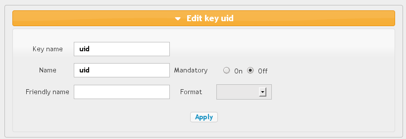

SAML authentication backend
Since LemonLDAP::NG 1.0rc1Presentation
LemonLDAP::NG can used SAML2 authentication to get user identity and grab some attributes defined in user profile on its Identity Provider (IDP). In this case, LemonLDAP::NG acts like an SAML2 Service Provider (SP). Several IDPs are allowed, in this case the user will choose the IDP he wants. You can preselect IDP with an IDP resolution rule. For each IDP, you can configure attributes that are collected. Some can be mandatory, so if they are not retruned by IDP, the session will not open.Configuration
SAML Service
See SAML service configuration chapter.Authentication and UserDB
In General Parameters > Authentication, set:- Users database type: SAML
- Authentication module: SAML
- Display reset password: 0
- Display password change: 0
Register LemonLDAP::NG on partner Identity Provider
After configuring SAML Service, you can export metadata to your partner Identity Provider. They are available at the EntityID URL, by default: http://auth.example.com/saml/metadata.Register partner Identity Provider on LemonLDAP::NG
In the Manager, select node Identity Providers and click on New metadatas: The IDP name is asked, enter it and click OK.
Now you have access to the IDP parameters list:
The IDP name is asked, enter it and click OK.
Now you have access to the IDP parameters list:

Metadata
You must register IDP metadata here. You can do it either by uploading the file, or get it from IDP metadata URL (this require a network link between your server and the IDP): You can also copy/paste the metadata: just click
on the Edit button. When the text is
pasted, click on the Apply button to keep
the value.
You can also copy/paste the metadata: just click
on the Edit button. When the text is
pasted, click on the Apply button to keep
the value.
Exported attributes
For each attribute, you can set:- Key name: name of the key in LemonLDAP::NG session (for example "uid" will then be used as $uid in access rules)
- Mandatory: if set to "On", then session will not open if this attribute is not given by IDP.
- Name: SAML attribute name.
- Friendly Name: optional, SAML attribute friendly name.
- Format: optional, SAML attribute format.

Options
General options
- Resolution Rule: rule that will be applied to preselect an IDP for a user. You have access to all environment variable, like user IP address.
$ENV{ =~ /^192.168/
Authentication request
- NameID format: force NameID format here (email, persistent, transient, etc.). If no value, will use first NameID Format activated in metadata.
- Force authentication: set ForceAuthn flag in authentication request
- Passive authentication: set IsPassive flag in authentication request
- Allow proxied authentication: allow an authentication response to be issued from another IDP that the one we register (proxy IDP). If you disallow this, you should also disallow direct login form IDP, because proxy restiction is set in authentication requests.
- Allow login from IDP: allow a user to connect directly from an IDP link. In this case, authentication is not a response to an issued authentication request, and we have less control on conditions.
- Requested authentication context: this context is declared in authentication request. When receiving the request, the real authentication context will be mapped ton an internal authenticationLevel, that you can check to allow or deny session creation.
Session
- Adapt session lifetime: session lifetime will be adapted from SessionNotOnOrAfter value found in authentication response. It means that if the IDP propose to close session earlier than the default LemonLDAP::NG timeout, the session _utime will be modified so that session is erased at the date indicated by the IDP.
- Force UTF-8: this will force UTF-8 conversion of attributes values collected from IDP.
Signature
These options override service signature options (see SAML service configuration).
- Sign SSO message: sign SSO message
- Check SSO message signature: check SSO message signature
- Sign SLO message: sign SLO message
- Check SLO message signature: check SLO message signature
Binding
- SSO binding: force binding to use for SSO (http-redirect, http-post, etc.)
- SLO binding: force binding to use for SLO (http-redirect, http-post, etc.)
Security
- Encryption mode: set the encryption mode for this IDP (None, NameID or Assertion).
- Check conditions: set to Off to disable conditions checking on authentication responses. Use with caution.